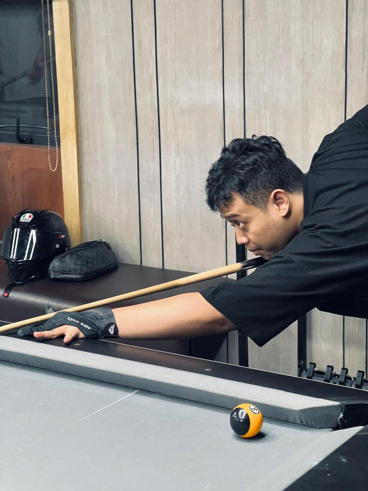

Hobi
- Main DJ
- Jalan Jalan
- Ngoding Tipis
Keahlian
Bahasa pemrograman
- Java
- C
- HTML & CSS (Tipis)
Framework & tools
- Git
Aktivitas Terakhir

Bermain Billiard
Intinya kegiatan ini mempunyai goal , bola sasaran di haruskan masuk ke pot dengan mengunakan bola cue.